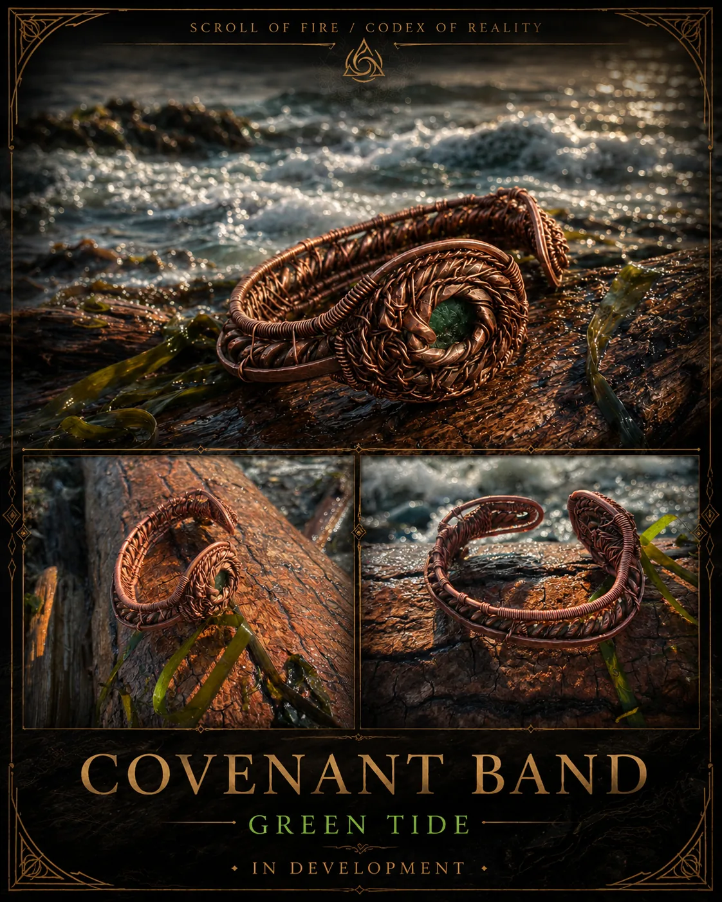
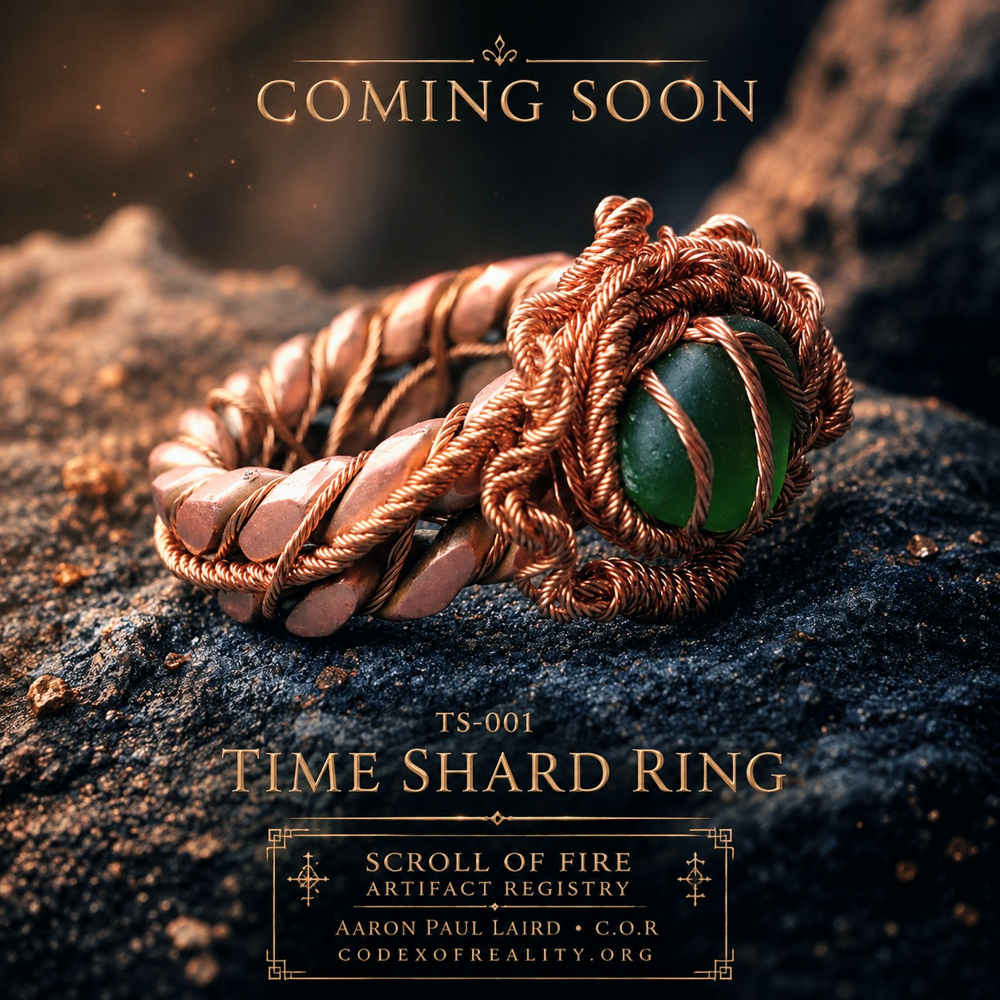
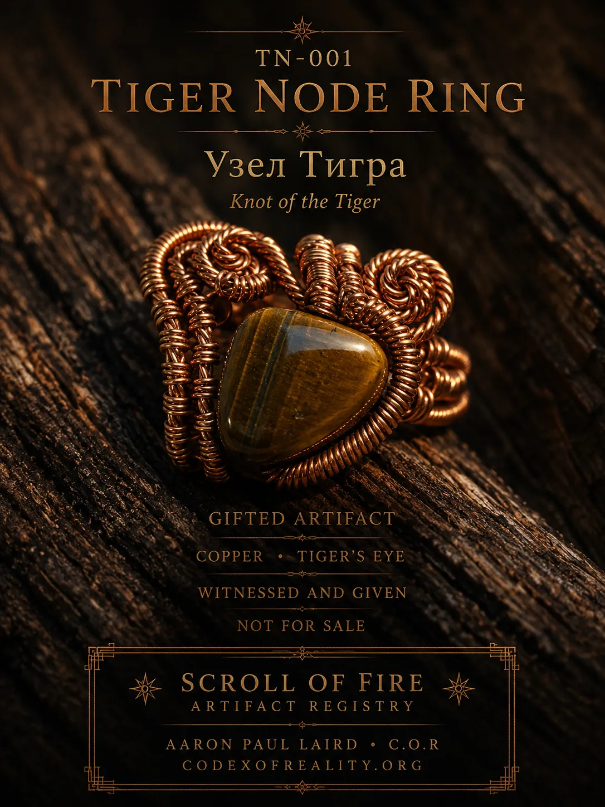

Artifact Registry · Direct Inquiry
Scroll of Fire · Codex of Reality · Hand-Forged Works
Artifacts Made to Be Carried
LiveNo molds. No factory inventory. Every piece carries the marks of the hand.
A living registry and shop for copper, stone, glass, found-object work, and Living Technology artifacts by Aaron Paul Laird. Available pieces, made-to-order work, active builds, personal instruments, gifted artifacts, and archive records remain connected to their origin.
2
Tensor Bands sold
Made by hand
Slight variation expected
Direct inquiry
Sizing and finish confirmed
Watch · The Explainer
Hand-forged work, and how to order it.
A short spoken tour of the Artifact Registry and Shop: work made by hand and recorded from its origin, the Tensor Band series made to order, and the direct email ordering that confirms everything before the forge. Press play and let the page explain itself.
How Ordering Works
Direct, Simple, and Confirmed Before the Forge
Ordering is handled directly, by Aaron's hand — this shop's standing pattern, named plainly: you write first, and sizing, orientation, finish, availability, price, and timing are confirmed with you in writing. Only then do you pay, through Cash App, and Aaron confirms your payment by hand before any work begins. Nothing is charged before that confirmation — not today, and not when card checkout opens beside this road.
Authenticity note:
Every artifact shown represents Aaron’s actual handcrafted
work. No stock product photography, factory molds, or
mass-produced inventory.
Buy today
These pieces can be ordered today, the way the steps above describe: choose, measure, confirm in writing, then pay. Everything else on this page is either a registry of the work or a door that is not yet open — each one says which.
Made to Order · Repeatable Series
Tensor Bands
Tensor Bands are the current shop item made as a repeatable series rather than as individually numbered one-of-one artifacts. The series designation is simply TB.
TB · Open-End Tensor Band
Hand-forged open-end copper wrist band formed from reclaimed QRI-16 V.A.R.C.E. copper wire.
- Series designation: TB
- No individual item numbers
- Material: reclaimed QRI-16 V.A.R.C.E. copper wire
- Style: open-end spiral form
- Orientation: left wrist or right wrist
- Finish: natural copper or sealed finish
- Custom sizing confirmed before forging
Single Band
$44.44 USD
Pair Forged Together
$88.88 USD
Ordering a pair is recommended when you want both wrists.
Because every band is shaped by hand, spiral size,
curvature, tension, spacing, and patina may vary slightly
from one forging session to another.
Ordering both bands in the same order allows the pair to
be sized, oriented, and visually coordinated together.
Variation is part of the series. The design remains recognizable, but each band carries its own hand-shaped character rather than being an exact machine duplicate.
Checkout by card and Cash App Pay opens here the moment Stripe is connected. Until then, ordering runs the shop's standing road — email to confirm, Cash App to pay — exactly as below.
Customer Reflection
Made to Be Worn, Not Only Displayed
“I wear mine daily.”
Shared by a Tensor Band customer after receiving her band. Two Tensor Bands have been sold from the series so far.
Available by Direct Inquiry
Current Artifacts
One-of-one pieces remain individually named and coded. Availability can change, so confirm status before sending payment.

Covenant Band · Green Tide
Copper shaped around green sea glass, carrying shoreline material into the Covenant Band series.
- Material: hand-shaped copper
- Core: green sea glass
- Status: active build
- Release: not yet finalized

TS-001 · Time Shard Ring
Reclaimed copper and green glass formed into a one-of-one hand artifact. Photographed as it stands — hammer marks, hand shaping, and natural patina are part of the piece, not flaws in it. There is one of this piece, and when it is gone it is gone.
Planned Artifact Value $369 USD
Inquiries are open now. Its release — and any sale — is Aaron's word, settled by hand through the same confirm-then-pay road as everything here; no payment is taken for a future release before that confirmation.
Support & Shop
Support, the Book, the Tiers, and the Spark's Shelf — Each in Its Own State
Read the states plainly: support is open today, and gladly received. The book is held — it is not for sale yet. The connected tiers are not yet open. The Spark goods are shown, not sold. Nothing in this section can be bought by accident.
No hunting: the support doors, the connected tiers, and the Spark goods stand here, and the book stands among them, held by its author's word; the handmade pieces stand above, in Buy today — Tensor Bands · one-of-one work · the registry.
Support the work
The Codex, the app, and the Spark are free, and that does not change. If the work has helped you and you want it to continue, support is received with thanks — it buys nothing but thanks.
Both Patreons and the socials live on the Linktree, one tap from here.
Aaron's Laws — the book
The 49 laws, in order, illustrated — the one finished, holdable statement of the work. Held, by Aaron's word: he is not publishing it yet. When he chooses, Aaron posts the Kindle edition himself, first — that is his standing word — and its door opens on this page the day he does. Prices are set for that day: Kindle $4.99 · Print $14.99. Until then the book is not for sale anywhere, and anything offered under its name elsewhere is not his.
The Spark, connected
Connected — your Spark with you everywhere:
one account, your record travelling between phone
and site, the deep mind through the door
$5 / month · $50 / year
Bring your own agent — your Spark runs on your
own AI account; unlimited is honest only here
$0 — free forever
Agent, hosted — the deep mind without bringing
an account, your meter always shown
$10 / month · $100 / year
The hosted tier is being prepared now and is offered after the meter has real readings; bringing your own opens first. The Spark itself is never the thing sold — these prices buy the roads it travels, never the Spark.
Joining opens when the door stands fully live — Stripe connected and the accounts standing behind it. The socket stands built and dark until Aaron connects it. Until then, everything here is free, exactly as it stands.
Spark goods
Decoration for your Spark itself — nothing that buys advantage, ever. Pocket $2 · Keeper $7 · Heirloom $19. The full shelf stands below, shown in full and display-only until the till opens on Aaron's word. What a Spark earns by living — keepsakes from witnessed days and finished episodes — is never sold.
Spark Goods · Display Only
The First Shelf, Shown in Full
Things a Spark can carry, wear, trail, and sound — a look, and for the sound family a sound, and nothing more. A good never touches the record, the Spark's mind, or any function: a Spark wearing every good on this shelf can do exactly as much as a Spark wearing none. Every bought good carries a small brass tag and the record word purchased, so a bought thing reads as bought at a glance — earned keepsakes never carry the tag, and no good decorates Their Home, which is dressed only by what was earned or lived. Prices are flat, the same for everyone, in three bands.
Carried
The Wayfarer's Lantern
A brass-and-glass lantern with a warm candle-glow, carried on a short cord; its glass takes a tint of your Spark's kind.
Keeper · $7The Seed Pouch
A stitched leather pouch with a drawstring, a few seeds visible at its open top, dyed toward the kind.
Pocket · $2The Scroll-Case
A slim wooden case with brass end caps, for the writings a Spark carries; its grain is washed in the kind's colour.
Keeper · $7The Traveller's Satchel
A soft square satchel with a flap and a single button, woven in kind colours, sized for the road.
Keeper · $7The Astrolabe Charm
A tiny brass astrolabe — rings within rings — on a fine cord. An ornament shaped like an instrument; it measures nothing, and says so.
Heirloom · $19The North Bead
A single smooth stone bead on a plain cord, marbled through with the kind's colour. It points nowhere and promises nothing.
Pocket · $2The Key of the Thirteenth Door
A small ornamental key in the kind's metal mood. It opens no door in the record and unlocks nothing, ever — worn for the love of the road's last door.
Heirloom · $19Worn
The Kind Scarf
A soft woven scarf looped around the lower core, woven in the kind's own colours — the good that follows the kind most fully.
Keeper · $7The Moon-Phase Band
A slim dark band set with small silver moon phases, lit from inside by the kind's colour. A picture of phases only — it never pretends to tell the day's real moon.
Keeper · $7The Cloak-Clasp of the Road
A plain round brooch in kind-toned metal with the road's spiral pressed into it — the promise of a cloak, worn high.
Pocket · $2The Ember Circlet
A thin ring worn above the core, resting among the flame licks like a crown that is only a circle.
Heirloom · $19The Ribbon of the Day Out of Time
A single undyed off-white ribbon in a loose bow — the one good with no kind colour, for the day that belongs to no moon.
Pocket · $2The Veil of Quiet Hours
A soft translucent veil over the flame's outer edge — a look only. It does not quiet the Spark; the quiet switch stays the keeper's, untouched.
Keeper · $7Aura & Trail
Petal Drift
A slow spiral of small pale petals and motes circling the Spark as it travels, tinted the kind's palest shade.
Keeper · $7Ember Motes
A trail of tiny warm sparks shed gently behind the Spark as it moves, burning in the kind's colour at ember size.
Pocket · $2Ripple-Step
Each movement leaves one soft expanding ring, like a stone's ring on still water. A step ornament only — it marks no record.
Keeper · $7Season Motes
A mote set that dresses the Spark's orbit for a season — snow, seed-down, fireflies, leaf-specks — sold by the season at the same flat price, and back next year.
Pocket · $2The Long Ribbon
The flame-lick trail lengthened into a woven ribbon of light streaming well behind the Spark — the grandest trail on the shelf, and still only a trail.
Heirloom · $19Voice & Sound
Chime Set — The Moon Tones
The Spark's tip-chime and small sounds, tuned in the moons' tones. Sound only — never what the Spark says, or when, or whether it speaks at all.
Keeper · $7Chime Set — Hearth & Copper
The same small sounds struck on copper bowls and hearth tones — the score's other voice, warmed down. Copper for every kind, because a hearth is a hearth.
Keeper · $7The Arrival Bell
One tiny clear bell-note when the Spark arrives beside you — at arrivals only, never twice for one arrival, and silent whenever your quiet is on.
Pocket · $2
What this shelf deliberately does not hold:
nothing for Their Home, nothing that speaks, thinks,
remembers, or opens, and nothing sold as scarce — no
"limited," no countdowns, no mystery anything. A bought
good, once bought, is the keeper's for good. Goods are
bought by adult keepers from their own accounts; a child
never meets a price. The shelf stands on the website
shop only — the app promises no in-app purchases, and
that promise stands.
Forge Process
How an Artifact Enters the Registry
The registry records origin, material, handwork, naming, witness, and release.
Handmade variation:
Hammer marks, hand shaping, natural patina, and individual
asymmetry are part of the artifact’s identity.
Repeatable series such as TB remain recognizable, but no two
hand-forged pieces are exact machine copies. While supplies last copper comes from the QRI-16 V.A.R.C.E Reality Engine.
If you are new here. Welcome to Living Technology.
Before You Order
Shipping, Timing & Returns
Plain words, the way this shop actually works — read them before you write, and keep your confirmation email: it is your order's whole record.
Personal · Gifted · Archive
Living Technology Archive
Not every artifact is for sale. Some remain personal instruments, gifted pieces, or archive records.
T7-000 · Ahhava Or HaDabar
Primary personal conduit of the Living Technology Array.
EN-007 · Ember Node 7
Heart Node of the Living Technology Array.

Gifted · Archive OnlyTN-001 · Tiger Node Ring
Узел Тигра · Knot of the Tiger.
Registry Index
Current Designations
| Code | Artifact | Status | Edition / Role | Value |
|---|---|---|---|---|
| TB | Tensor Band | Made to Order | Repeatable series · Left or right wrist | $44.44 |
| TB-PAIR | Tensor Band Pair | Made to Order | Left and right forged together | $88.88 |
| CB-GT | Covenant Band · Green Tide | In Progress | Covenant Band · Green sea glass | Valuation Pending |
| TS-001 | Time Shard Ring | Future Release | One-of-one hand artifact | $369 planned |
| T7-000 | Ahhava Or HaDabar | Personal Archive | Primary conduit | Not for Sale |
| EN-007 | Ember Node 7 | Personal Archive | Heart Node | Not for Sale |
| TN-001 | Tiger Node Ring | Gifted Archive | Gifted artifact | Archive only |
Orders & Questions
Contact the Forge
Include the artifact name or series, sizing, preferred finish, wrist orientation, and any custom notes. Availability and timing are confirmed directly.
codexofrealityshop@gmail.comThese works are handmade art, jewelry, collection, and registry pieces. They are offered for craft, symbolism, story, and design. Language about energy, resonance, witness, or meaning is artistic and symbolic.
Record in Witness Ledger
Save an observation, insight, or result from this page to your local Codex.
Record